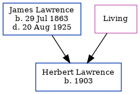

Herbert Lawrence 1903 -
[ Home ] | [ Calendar ] | [ Surnames Index ] | [ Census Index ] | [ Family History ]The child of James Lawrence (an agricultural laborer) and Mary Baker, Herbert Lawrence, the great-uncle of Nigel Horne, was born in Sutton, Kent, England in 19031,2,3. On Apr 2, 1911, he was living at 2 Oast Cotts, Monkton, Kent, England1.
Parents
- James was born on Jul 29, 1863
- Mary Ann Elizabeth
Citations
- 1911 Census for England & Wales - Findmypast (was age 8 and the son of the head of the household)
- 1911 England Census Online publication - Provo, UT, USA: Ancestry.com Operations, Inc., 2011.Original data - Census Returns of England and Wales, 1911. Kew, Surrey, England: The National Archives of the UK (TNA), 1911. Data imaged from the National Archives, London, England.
- England & Wales, FreeBMD Birth Index, 1837-1915 Online publication - Provo, UT, USA: The Generations Network, Inc., 2006.Original data - General Register Office. England and Wales Civil Registration Indexes. London, England: General Register Office. © Crown copyright. Published by permission of the Cont
Media
1911 Census for England & Wales - GBC/1911/RG14/04477/0177/6
Family Tree
Generated by ged2site. Last updated on Jun 11, 2024